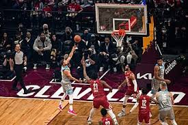

1891 წელს სპრინგფილდის (მასაჩუსეტსი, აშშ) კოლეჯის ანატომიის მასწავლებელმა ჯეიმზ ნეისმიტმა დაამუშავა პირველი წესები და 1891 წლის დეკემბერს პირველი მატჩიც მოაწყო. მალე ახალი თამაში მთელმა ამერიკამ აღიარა, მოგვიანებით კი დანარჩენმა მსოფლიომაც გაიცნო.

კალათბურთის სათამაშოდ იყენებენ მოედანს, რომლის ზომაა 28X15 მ. პირითი ხაზების შუა ადგილას სპეციალურ დგარებში დაყენებულია ფარები, რომლებზეც დამაგრებულია ლითონის რგოლებზე დაკიდებული უძირო ბადეები (კალათები). მანძილი იატაკსა და კალათს შორის 305 სმ-ია, თვითონ ფარის ზომებია 180X105 სმ ან 120X80 სმ, ასევე არსებობს ქუჩის კალათბურთის ფარი და სამოყვარულო კალათბურთის ფარი, რომლის ზომებიც განსხვავებულია. კალათის დიამეტრი 45 სმ-ია. ფარის წინ 625-ანი რადიუსით შემოსაზღვრულია 3-ქულიანი ტყორცნის არე და საჯარიმო ზონა. კალათბურთს თამაშობენ ტყავის, სინთეტიკური ტყავის ან სხვა სინთეტიკური მასალისაგან დამზადებული ბურთით. რომლის გარშემოწირულობა 74,5-78 სმ-ა, ხოლო მასა — 567-650 გრამი.მოთამაშეთა რაოდენობა ყოველ გუნდში 5-5 კაცით განისაზღვრება. თამაშის დროს ჩაგდებული ბურთისათვის გუნდს ერიცხება 2 ან 3 ქულა, ყოველი რეალიზებული საჯარიმო ტყორცნისათვის 1 ქულა, გამარჯვებულია ის გუნდი, რომელიც მეტ ქულას დააგროვებს. შეხვედრა შედგება ოთხი 10-წუთიანი (სუფთა დრო) მეოთხედისგან. მეოთხედებს შორის შესვენება 2 წუთია. გამონაკლისია შესვენება მეორე და მესამე მეოთხედებს შორის, რომელიც 15 წუთი გრძელდება. მატჩის ფრედ დამთავრების შემთხვევაში ინიშნება დამატებითი 5-წუთიანი ტაიმი (ან ტაიმები), გამარჯვებულის გამოვლენამდე. დაშვებულია ნებისმიერი რაოდენობის შეცვლები. ყველა შეცვლილ მოთამაშეს უფლება აქვს დაბრუნდეს მოედანზე. კალათბურთს ხელით თამაშობენ. დაშვებულია ბურთის ხელით ტარება, გადაცემა და ტყორცნა, როგორც ცალი, ასევე ორი ხელით. არ შეიძლება ორ ნაბიჯზე მეტის გადადგმა ბურთის დაუგდებლად, ბურთიანად ახტომა და დახტომა, მეტოქის საჯარიმო ზონაში სამ წამზე მეტხანს ყოფნა. გუნდს ბურთის მეტოქის ნახევარზე გადატანისათვის ეძლევა 8, ხოლო შეტევისათვის სულ — 24 წამი, რომლის გასვლის შემდეგ ბურთი მეტოქეს გადაეცემა. მწვრთნელს უფლება აქვს თითოეულ ტაიმში აიღოს ერთი წუთშესვენება (მეოთხეში — ორი). მოთამაშე ჯარიმდება ყველა ამ წესის დარღვევისათვის, აგრეთვე ბლოკირებისათვის და უხეში თამაშისათვის. მოთამაშე ჯარიმდება როგორც ჩვეულებრივი ჯარიმით, ასევე პერსონალური შენიშვნით. 5 პერსონალური შენიშვნის მიღებისშემთხვევაში მოთამაშე ტოვებს მოედანს. ოთხი გუნდური შენიშვნის შემდეგ ყოველი ჯარიმა სრულდება საჯარიმო ტყორცნებით. ჩაგდებული საჯარიმო იძლევა 1 ქულას. თამაშის მსვლელობისას 2-ქულიან ზონიდან ჩაგდებული ბურთი ფასდება 2, ხოლო 3-ქულიანი ზონიდან ჩაგდებული - სამ ქულად.
კალათბურთის საერთაშორისო ფედერაცია (Federation Internationale de Basketball - FIBA) დაარსდა 1932 წლის ივნისს ქალაქ ჟენევაში. დამფუძნებელი ქვეყნები იყვნენ: არგენტინა, იტალია, ლატვია, პორტუგალია, რუმინეთი, საბერძნეთი, შვეიცარია და ჩეხოსლოვაკია. ამჟამად იგი აერთიანებს 212 ქვეყანას და 5 ზონალურ (კონტინენტალურ) კომისიას.
კალათბურთში, ისევე როგორც სპორტის ბევრ სხვა სახეობაში უმთავრესი ტურნირია ოლიმპიური თამაშების პროგრამით გათვალისწინებული კალათბურთელთა ტურნირი, რომელსაც კალათბურთის საერთაშორისო ფედერაცია საერთაშორისო ოლიმპიურ კომიტეტთან ერთად ატარებს. ასევე უმნიშვნელოვანესი ტურნირია მსოფლიოს ჩემპიონატი ვაჟთა და ქალთა შორის. გარდა ამისა ზონალური (კონტინენტალური) კომისიები ატარებენ თავიანთი კონტინენტების ჩემპიონატებს და საკლუბო ტურნირებს. მეტად პოპულარულია ტურნირი, რომელსაც ატარებს ნაციონალური საკალათბურთო ასოციაცია — NBA, რომელიც საკლუბო დონეზე იმართება ამერიკულ და კანადურ კლუბებს შორის.